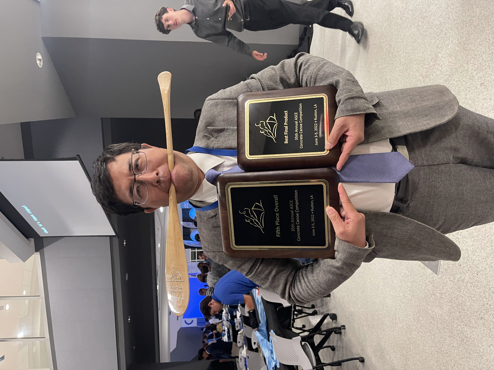

About Our Team
Innovation, Engineering, and Teamwork at NYU Tandon.
Vertically Integrated Projects
Concrete Canoe is a Tandon VIP (Vertically Integrated Project) that teaches students design through the construction of a concrete canoe. Throughout the year-long process, we develop creative and innovative ideas to produce the most efficient design, from hydrodynamic analysis to digital fabrication. Learn more here.
Our Subteams
Mix Design
Developing the perfect concrete mixture that is both lightweight and strong.
Hull Design
Modeling and optimizing the canoe's shape for hydrodynamic stability.
Construction
Building the specialized mold and managing the casting process.
Aesthetics
Applying the final finish, graphics, and technical presentation.
Faculty Advisor
Weihua Jin

Faculty Advisor
wjin@nyu.edu